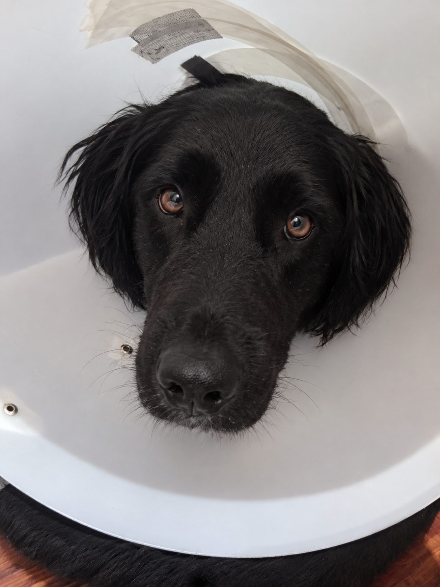
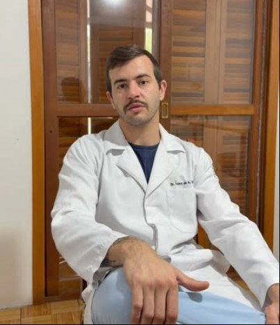
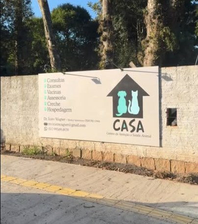

Emergência 24h
A qualquer hora, todos os dias da semana. De madrugada, no domingo, quando for.
Chamar agora24hClínica veterinária em Gravataí/RS
Aberto agora·atendimento 24 horas
Emergência a qualquer hora do dia ou da noite, consultas, exames, internação e cirurgia. Quem atende é o Dr. Ícaro Wagner, que acompanha seu pet até ele ficar bem.
ou ligue (51) 99349-4670
Emergência
Toque na opção. O WhatsApp abre com a mensagem pronta, é só enviar.
Se for grave, venha direto. Rua Quintino Bocaiuva, Gravataí. Mande um "estou a caminho" no WhatsApp pra gente já te esperar.
Abrir rota no mapaServiços
Do primeiro atendimento à recuperação, num lugar só. Agende pelo WhatsApp.
A qualquer hora, todos os dias da semana. De madrugada, no domingo, quando for.
Chamar agoraCom tempo para explicar o que está acontecendo e quais são os próximos passos.
Agendar consultaExames de imagem para chegar ao diagnóstico sem rodeio.
Agendar exameCada etapa explicada antes, durante e depois. A recuperação é acompanhada de perto.
Falar sobre cirurgiaQuando ele precisa ficar, fica bem cuidado, e você recebe notícia.
PerguntarO calendário certo, do filhote ao adulto.
Agendar vacinaPara os dias em que você precisa sair e ele não pode ir junto.
Consultar vagas
Quem atende
Médico-veterinário
Nas avaliações, os tutores lembram dele pelo nome: quem examinou, quem explicou cada etapa e quem seguiu respondendo no WhatsApp até o pet ficar bem.
Momentos delicados pedem clareza, rapidez e atenção, e procuro sempre oferecer isso a cada tutor e paciente.
Dr. Ícaro, respondendo a um tutor no Google
Avaliações no Google
Algumas histórias de quem chegou preocupado e saiu tranquilo.
“Seu diagnóstico rápido e assertivo foi fundamental para iniciar o tratamento imediatamente […] a vida do Stive foi salva.”★★★★★
“Dr. Ícaro examinou e prescreveu o tratamento e agora ele já corre feliz pelo pátio.”★★★★★
“Cuidou do meu cachorrinho com muita competência, atenção e carinho durante toda a cirurgia e também no pós-operatório.”★★★★★
“De todas clínicas que eu estava a procura na hora do desespero, Wagner foi quem mais se preocupou com ela.”★★★★★
“Explica tudo de forma clara, objetiva e paciente, garantindo que a gente entenda perfeitamente o que está acontecendo e quais são os próximos passos.”★★★★★
A clínica também ajuda pets a encontrar família. Veja quem está esperando nos destaques de Adoções do nosso Instagram.
Como chegar
Gravataí/RS · CEP 94150-260
| Segunda | 24 horas |
|---|---|
| Terça | 24 horas |
| Quarta | 24 horas |
| Quinta | 24 horas |
| Sexta | 24 horas |
| Sábado | 24 horas |
| Domingo | 24 horas |

Dúvidas
Sim. O atendimento é 24 horas, todos os dias da semana. Em emergência, chame no WhatsApp ou ligue para (51) 99349-4670 e avise que está a caminho.
Para consulta, exame, vacina, creche e hospedagem, sim: agende pelo WhatsApp. Emergência não espera agendamento.
Sim. Chame no WhatsApp para ver o melhor horário para o exame.
O mesmo veterinário que atendeu acompanha a recuperação e responde pelo WhatsApp.
Na Rua Quintino Bocaiuva, em Gravataí/RS (CEP 94150-260). Procure a placa da CASA no muro.
Se o seu pet precisa de ajuda agora, a CASA está aberta.
Chamar no WhatsApp